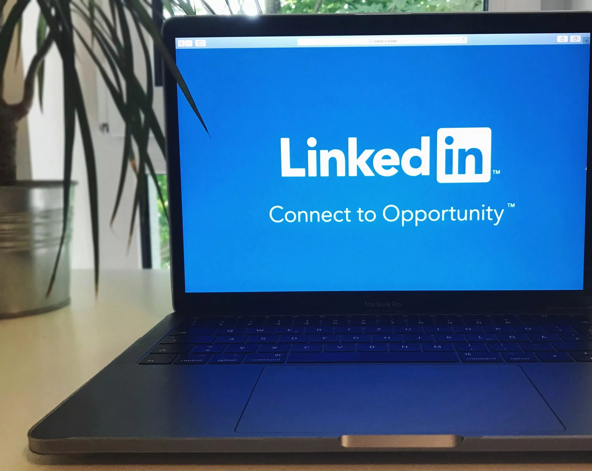
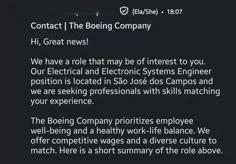
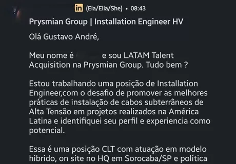
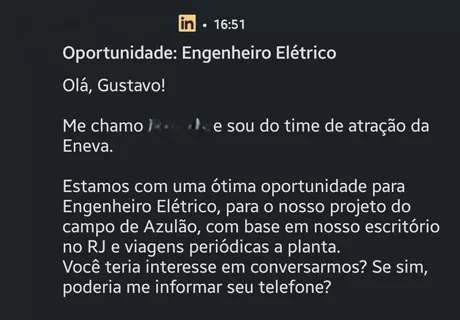

São 11 campos invisíveis no seu perfil. Preencha no fim de semana. Recrutadores te encontram em 14 dias.

Você abre o LinkedIn e vê colegas com metade da sua experiência postando que acabaram de ser contratados.
Você olha o perfil deles, olha o seu, e não entende. Você trabalhou em projetos maiores, liderou equipes maiores. Mas eles estão recebendo propostas e você está enviando currículos que ninguém responde. Não é inveja. É uma injustiça que ninguém explica.
Você recebe aquele e-mail: "Agradecemos seu interesse, porém optamos por seguir com outros candidatos."
E tudo bem, faz parte. Mas depois é o segundo. O terceiro. O sétimo. E em algum momento você para de abrir os e-mails porque já sabe o que vai encontrar. Então começa a duvidar de tudo: do seu currículo, da sua experiência, de si mesmo.
Você atualiza seu perfil do LinkedIn num domingo à noite.
Muda a foto, reescreve o resumo, adiciona habilidades. Fica até satisfeito. Mas na segunda, na terça, na quarta — nada muda. Nenhuma visualização nova. Nenhum contato. "Então nem isso resolve?"
Você ouve que precisa "criar conteúdo" e "construir marca pessoal".
Mas você é profissional sério, não influenciador. Você não quer fazer dancinha, não quer postar frase motivacional, não quer virar coach. Você só quer que as empresas certas saibam que você existe.
Você já pensou em ligar para um antigo chefe para pedir indicação.
E ficou com vergonha. Porque você deveria estar numa fase da carreira em que as oportunidades chegam até você — não numa fase em que precisa pedir favor. Mas elas não chegam. E o silêncio pesa mais a cada semana.
Daqui a 30 dias, você abre o LinkedIn numa terça-feira de manhã. Tem 3 novas mensagens de recrutadores. Uma delas é de uma multinacional que você admirava há anos. O salário é 40% acima do que você ganha hoje.
Você não se candidatou. Não pediu indicação. Seu perfil fez o trabalho.
Você lê a mensagem, toma um café, e responde com calma — porque agora você tem opções. Você escolhe, não implora.
Parece bom demais? Continue lendo. Vou te mostrar por que isso acontece — e por que não está acontecendo com você.
Pense assim: imagine que você é o melhor restaurante japonês da cidade. Comida incrível. Atendimento impecável. Mas o seu nome não está no Google Maps. Ninguém digitando "restaurante japonês perto de mim" vai te encontrar.
É exatamente isso que acontece com o seu perfil no LinkedIn.
Quando um recrutador precisa de um "Gerente de Projetos Sênior com experiência em gestão de portfólio e metodologias ágeis", ele abre o LinkedIn Recruiter (ferramenta que custa US$ 10.000/ano), digita palavras-chave específicas e aplica filtros cirúrgicos.
Se as palavras-chave não estão no seu perfil — nos campos certos — você NÃO EXISTE para aquele recrutador.
Você otimizou seu perfil para HUMANOS lerem. Recrutadores usam MÁQUINAS para filtrar. É como escrever uma carta linda à mão... e mandar por fax para alguém que só usa email.
Era uma terça-feira de manhã em Pittsburgh, e eu estava sentado no escritório de uma multinacional com o celular debaixo da mesa.
Não estava fazendo nada errado. Estava fazendo algo pior: procurando emprego escondido, como se fosse um crime. Eu — um profissional com mais de 18 anos de experiência, que já havia liderado projetos internacionais, coordenado equipes em múltiplos países e trabalhado nas maiores empresas do setor — estava ali, digitando "electrical engineer senior" na barra de busca do LinkedIn.
Treze candidaturas em uma semana. Sabe quantas respostas? Zero.
Mas eu estava errado. E você também está.
O problema nunca foi a minha competência. O problema era que eu era invisível.
Descobri por acidente. Um recrutador canadense me mandou uma mensagem — a primeira em meses — e eu perguntei: "Por que você me encontrou agora e não antes?"
"Seu perfil apareceu porque você usou as palavras certas no título. A maioria dos profissionais do seu nível nem aparece nas minhas buscas."
Mudei meu perfil. Não foi uma reformulação bonita. Foi uma reengenharia de palavras-chave. Em 14 dias, recebi a primeira mensagem. Em 30 dias, eram sete. Em 90 dias, mais contatos do que nos dois anos anteriores somados.
Prints reais de mensagens de recrutadores. Sem edição, sem filtro, sem montagem.



Um coach de LinkedIn cobra R$ 500-2.000. Uma consultoria de currículo custa R$ 300-800. Uma entrevista perdida pode custar R$ 10.000+ em salário anual.
Compre o ebook, aplique o método, e se dentro de 7 dias não valeu cada centavo — por QUALQUER motivo — mande um email e eu devolvo 100% do seu investimento. Sem perguntas. Sem burocracia.
E vou além: mesmo que peça reembolso, pode ficar com o ebook.
PS. Lembra daquele colega menos qualificado que recebe ofertas de recrutadores? Ele não é melhor que você. Ele só entendeu como aparecer nas buscas. Este ebook te dá exatamente isso. R$ 59,90, garantia de 7 dias, acesso imediato. A única coisa que pode dar errado é você não tentar.
PPS. Cada dia que seu perfil continua "invisível" é um dia em que recrutadores estão encontrando — e contratando — profissionais menos qualificados que você. O método leva um fim de semana. Daqui a 7 dias, você pode estar recebendo as primeiras mensagens... ou lendo esta página de novo, pensando "eu deveria ter comprado."